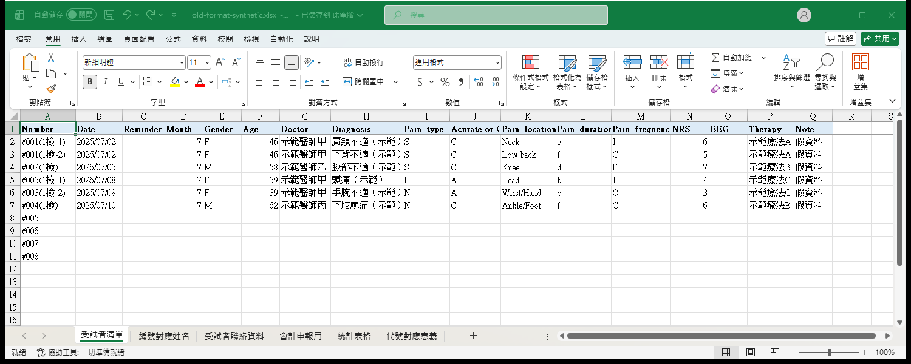
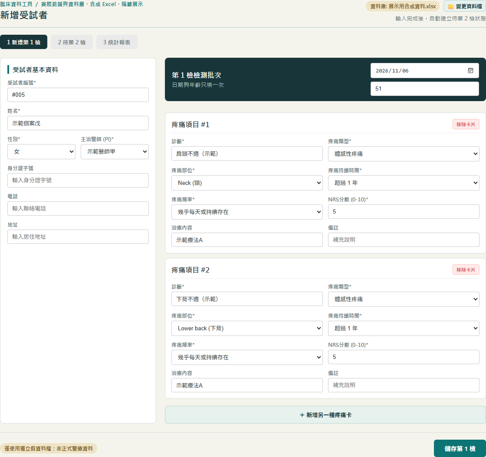
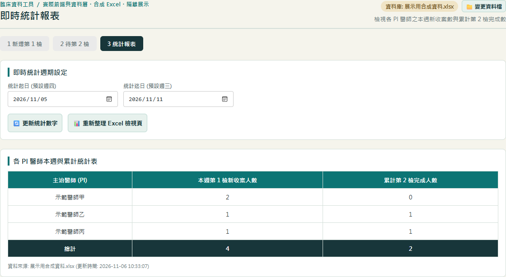

臨床收案工具 ／ 工作上實際在用
約 2 天用 AI 做出收案工具，現在管理近 200 名受試者紀錄
Python 桌面程式Excel 資料檔AI Agent 協作實作
約 2 天做出第一個可用版本
2 位收案人員在用
近 200 名受試者紀錄由工具管理截至 2026 年 11 月
遇到的問題
我接手臨床收案後，所有資料都記在一張 Excel 清單裡。同一位受試者有幾個疼痛部位就佔幾列，還要做兩次評估；誰還沒做第二次，電子檔看不出來，只能翻紙本對照。
原本 vs 現在
原本
- 在 Excel 清單逐格填寫
- 誰沒做第二次評估，要翻紙本
- 姓名、聯絡資料分在別的工作表
現在
- 用表單輸入，漏填會先提醒
- 自動列出待補登的人，點一下帶入上次資料
- 一張表單填完，自動存到對應工作表
分工
我負責說明需求、設計操作流程、拿舊資料對照驗收、教同事使用。
AI Agent 負責寫介面和 Excel 讀寫程式，依我的回饋修改。
還沒解決的事
現場不一定隨時開著電腦，有些第二次評估還是先記在紙本。工具做好，不代表問題全部解決。
更多細節：為什麼保留 Excel、展示資料怎麼來
保留 Excel：不用安裝特殊程式，任何人都能直接打開確認；有誤錄也能直接在 Excel 改，工具按「重新整理」就會同步。每次寫入前會先自動備份。
展示資料：右側第一張是依舊格式重建的 Excel，其餘三張是工具的實際畫面。資料全部是虛構的，另外做一份假 Excel 讓工具讀取；沒有開啟正式受試者資料，也不公開公司或試驗名稱。截圖用瀏覽器開啟原介面拍攝，不是桌面安裝版。



